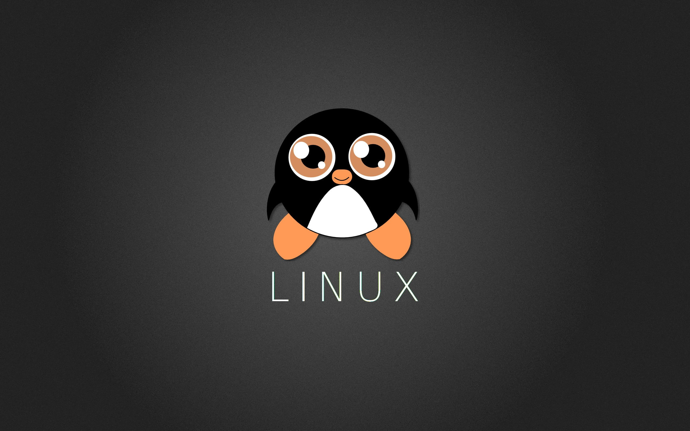

1. Linux: Open Source Freedom
Linux is an open-source operating system, providing users with the freedom to view,
modify, and distribute the source code. This transparency fosters a collaborative community,
ensures security through peer review, and allows users to tailor their system to specific needs.
2. Kali Linux: Specialized Security Tools
Kali Linux is designed for ethical hacking and penetration testing, offering a comprehensive suite
of pre-installed security tools. It empowers cybersecurity professionals and enthusiasts with a
robust platform for testing and securing networks, making it an invaluable asset in the field of
information security.

3. Freedom from Windows: Enhanced Security and Stability
Moving away from Windows provides enhanced security and stability. Linux systems are less susceptible
to malware and viruses, and their robust architecture ensures a more stable and reliable computing environment.
Additionally, Linux offers a wealth of software alternatives, reducing dependency on proprietary applications
and mitigating compatibility issues.